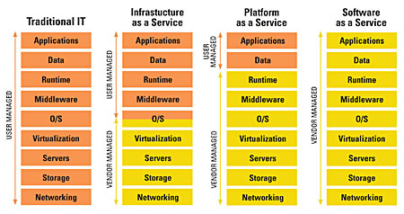

The transition to cloud computing must be evolutionary and carefully planned.
One would not transport a tribe from the Amazon jungle to an apartment house in Chicago and expect life to continue as before. One also would not lift thousands of applications that populate the U.S. Defense Department's network and place them into clouds and expect no operations to be interrupted during the transition.
Defense Department applications are run by hundreds of contractors in more than 500 data centers using thousands of networks. Programs run on hundreds of thousands of servers that have different versions of operating systems, a wide variety of security measures and unique solutions for making network connections. Many inconsistent databases exist, and programmers have spun custom-made feeds among applications for updating information.
Cloud computing is based on the pooling of resources to create centrally managed infrastructures that can be deployed as services. That can be accomplished only through standardization of software and the computing environment. To move the Defense Department from its fractured and diverse legacy environment into a high-performance cloud will take effort, money and disruption in operations.
The path to Defense Department clouds should be evolutionary. It should be accomplished by making technically safe moves, but only if gains are made at each step. Natives cannot be relocated to the "promised land" without doing so gradually.
A server consolidation ratio of at least 15:1 can be realized by virtualization of computing capacities. The servers then can share machine cycles in a pool rather than processing applications individually. Such sharing also applies to combinations of disk storage that house Defense Department databases.
Virtualization of servers, along with the installation of monitoring and control software, can deliver more than 70 percent reductions in capital costs for equipment if new servers are acquired. If only existing servers are pooled, there will be no reduction in capital costs except that spare capacity now can be used for greater reliability by means of backups and fail-over capacity.
The big savings from cloud virtualization come from personnel and lower electricity costs. This yields reductions of more than 30 percent in operating expenses. The break-even point for taking this approach can be less than two years.
Virtualization enables organizations to take advantage of multicore microprocessors to allocate computing power as the demand rises for processing cycles. Such utilization of capacity is achieved by means of automated resource allocations. Because electric power for computers and for air conditioning now cost more than equipment depreciation, virtualization will cut information technology power usage by up to 55 percent.
Virtualization also can help reduce disk storage by up to 50 percent by managing disk space for multiple applications simultaneously rather than one application at a time. That enables administrators to defer purchases of disk files.
Virtualization brings visibility, control and scalability to networks, allowing administrators to move beyond per-host network configurations to managing network clusters for fulfillment of service-level agreements. That makes possible the enforcement of uniform network policies for migration across several computer clusters or over geographically dispersed data centers. Whereas a single administrator can support up to 150 servers, one operator can manage well over 2,000 servers in an automated data center. A significant reduction in the number of operators takes place in the control of large server complexes. These are jobs now held by a large number of small local contractors.
Virtualization of servers also improves data center performance so that more than one million desktops can be converted from thick to thin clients. Such a move will deliver large savings and short-term payoffs.
Defense Department components may proceed with the virtualization of their server clusters. This will require the standardization of hypervisor software, which will set the stage for proceeding with the next step.
Organizations now can reduce the cost of achieving close to 100 percent uptime as well as operate with a much smaller number of data centers. Performance and scale of operations are necessary for critical applications in cyber operations. This is accomplished through instant disaster recovery, as well as through fallback capabilities that are applied for dependence on a smaller number of data centers. These centers are geographically dispersed, but they are connected via dedicated fiber optic circuits.
Properly configured cloud environments eliminate both unplanned and planned outages. Backup and recovery are provided to prevent data loss, which includes built-in de-duplication features to reduce data storage requirements.
Workloads are distributed to at least one backup site but preferably to more. In the case of Google, for example, the processing from a failed site can be taken over by at least two other data centers that are connected by dedicated high-capacity optical circuits.
Data centers now can be connected with fiber optic lines so that computing capacity can be shared across a large network, thus delivering additional large savings.
The number of administrative personnel can be reduced dramatically for the management of geographically distributed development support and computing capacity. Systems development and testing personnel can be concentrated at a few sites. Standardization of cloud operations allows specialized programming personnel to concentrate on maintenance of software while keeping them housed in close proximity for improved cooperation.
Automated management of the production environment includes the control of the capacity, latency and uptime of a diverse mix of applications. Operating systems, security software and specialized utilities can be managed across multiple data centers. By automating managerial tasks, cloud computing will simplify the provisioning of a wide range of service offerings. This ensures the delivery of service levels regardless of the physical infrastructure, diversity of computing devices or the configuration of networks. The central control staff then can move work from one virtual infrastructure to another without having to reconfigure or customize security policies.
Streamlining of operations includes the encapsulation of legacy applications in a centrally managed environment. Diverse applications can be placed into executable packages that run completely isolated from each other. The virtualization layers map the physical hardware resources into virtual machine resources. Each virtual machine will have its own central processing unit, memory, disks and input/output devices for each separate legacy application. In this way, applications transported from servers that have been discarded now will have the full equivalent of a standard x86 machine with Intel and AMD processors, along with its version of the obsolete Windows or Linux host operating systems.
In virtual operations, the encapsulated hardware support is provided by means of inheritance from the legacy host operating system. Migrating individual applications to run on top of a hypervisor makes it possible to have different versions of the Windows or Linux operating systems running conflict-free on the same server.
Once legacy applications are deployed in the virtual cloud environment, individual application packages can be relocated to different virtual computers, eliminating costly recoding and testing. Subsequently, when time and funds are available, the legacy applications can migrate into successor environments. At that time, conversion can begin migration of legacy applications into the new environment.

The interim placement of diverse legacy applications on a shared hypervisor offers numerous benefits. This will deliver uniform application access to all users while administering compliance with uniform security policies. It also eliminates additional server hardware for support of different operating systems.
Another benefit is that it converts legacy applications for support by different operating system versions without the need to re-code, re-test and re-certify. It also streams applications from a shared network drive with no intermediate servers or client software to install and controls storage costs by providing a higher level of utilization.
Finally, this strategy allows overallocation of storage capacity for increased storage utilization, increases application uptime and simplifies storage capacity management.
The relocation of legacy applications into a virtual data center is an evolutionary step. It will produce ongoing cost savings until legacy applications are phased out. The placement of legacy applications in a virtual data center should be seen as a path for greater interoperability of data through consolidation of databases.
Individual customers acquire the capacity to realize the benefits of secure computing while maintaining security, complying with Office of the Secretary of Defense policies and reducing costs. Central management of cloud operations depends on large collections of management and automation tools. Such tools allow the pooling of resources, administration of computing resources, and the provisioning of self-service menus for end users with nontechnical skills.
Cloud support tools make it possible to customize information technology resources for business needs. They enable the deployment of cloud computing as a utility-type service where the customer does not need a high level of technical expertise.
By adopting cloud computing, customers can stop viewing information technology as a fixed annual budget item, which in the Defense Department takes a long time to negotiate and authorize. Instead, customers can pay for computing as a metered expense, as needed and whenever used.
From the standpoint of economics, the adoption of cloud computing removes the capital costs as well as user technology risks from the Defense Department and passes it on to a utility that is optimized to manage obsolescence. Long-term efficiencies will move information technology assets to a cloud provider that must operate as a business. It is the cloud operator who is responsible for deciding where pooled capital assets either can be leased or acquired, or outsourced for the least cost. This removes the elaborate acquisition process that presently burdens program executive officers (PEOs) with the responsibility for securing bids. PEOs will focus on applications, which have a much shorter acquisition cycle.
Software can be offered and maintained on the cloud. The customer pays only for its use. That is software as a service (SaaS). The customer also can host its own software on the cloud. That becomes infrastructure as a service (IaaS), where the customer pays for the delivery data processing. Lastly, the customer can use the cloud as a computing facility that delivers complete results. That is the platform as a service (PaaS). It is likely that Defense Department components will tend toward the PaaS solution to maintain control over data and applications.
Defense Department operations in a cloud — whether as a public or a private cloud — must be accessible by means of Open Virtualization Format communications. This standard opens access to a catalogue that describes the availability of services, capacity and security, as well as the quality of the offerings. It will be the purpose of a departmentwide catalogue of services for components to create and maintain their own cloud offerings, which can be made available subject to policy and security restrictions.
Information technology personnel without programming expertise, as well as technology-savvy users, ultimately will have the skills necessary to use cloud services because access will be standardized. Most requests will be made by using graphic buttons to retrieve answers from the cloud.
Bringing the user closer to the information technology provisioning process offers significant improvements in managing business systems, compared to the current practice in which contractors must thread their way through nonstandard versions of networks and unique access procedures. With the separation of the cloud infrastructure from applications, computing needs can be met without the lag time and complexities that so far have been associated with obtaining results from the computer applications.
Diverse physical infrastructures listed in a Defense Department cloud catalogue can be viewed in the future by departments that need not know about each other except for data that is available for shared use. The result of the evolution toward a cloud can be seen either as a department proprietary and secure private cloud or as a public cloud that offers services with different security features. Such an arrangement enables a wide range of commercial firms to deliver services to the department, where they can be re-assembled as an offering from several sources, including third-party applications.
The U.S. Navy, for example, could set up a private secure cloud within its own infrastructure that supports its critical applications. For rapid transition, it also could choose a hybrid solution by engaging SaaS vendors for generic applications such as e-mail, calendars, collaboration utilities, group communications, documents, spreadsheets, presentations, videos, slide shows and project management. As long as other organizations such as the Army and the Air Force remain interoperable by means of cloud standards, the entire Defense Department can be viewed as an interoperable network.
Defense Department components will not always be self-contained. They will have to draw on commercial suppliers' public clouds, which can provide complementary capabilities such as access to public clouds offered by shippers, retailers, banks, travel agencies, airlines, food suppliers and health care providers. Ultimately thousands of public clouds will be available to support the department's operating requirements.
Security will come in the form of several offerings that can certify security assurance for every connection. A variety of commercial security tools already are available for use as virtual appliances or services. In the case of every connection to an external cloud, Defense Department components will have to ensure that every connection can be protected and isolated. This is an integral part of the department's virtualization infrastructure.
With the availability of a set of standard Defense Department cloud management tools, the computer industry has entered into a new era of organizing computing. One can compare the recent availability of such tools with the introduction of the Microsoft Windows operating system in 1981. Over a period of 25 years, Windows enabled users to abstract the management of personal computers from individual involvement with the technically difficult management of increasingly complex hardware. Windows' dominance is vanishing now because the dominance of the personal computer in systems architecture is disappearing. The new era of computing is based on the dependency of systems on Internet-related networks. The cloud computing infrastructures are making it possible to abstract the management of hardware and software from direct user interventions. Systems dependency is moving from personal computers to network-provided service.
Over the next decade, the focus of Defense Department information technology executives will pass from the management of physical assets to an emphasis on the choice of cloud services. Department executives will concentrate on taking advantage of the concept of cloud computing, which views all computing not as dedicated assets, but as an accessible utility that delivers computer capacity as well as application services. It is a utility that is based on demand-driven variable costs. The new cloud management tools should be seen as a meta-operating system. That will make it possible for any department component to draw on all available information technology resources.
Defense Department information technology operations ultimately will split into the physical side and the user side, with separate organizations and budgets for each. The physical side will continue to own and operate the private cloud hardware and communications infrastructure anchored on consolidated data centers. For example, the Defense Information Systems Agency — or whatever will emerge from the U.S. Cyber Command — will act in that role for the department.
A new Defense Department cloud utility will deliver secure raw computing capacity that will be available as a commodity offering with guaranteed levels of security, service levels and transaction pricing. Local management will continue to be responsible for applications, local area networks and desktops.
Users increasingly will employ self-service tools to deploy applications from published catalogues based on policies, service levels and pricing. They will be able to choose between internally and externally hosted offerings, for a hybrid solution, on the basis of competitive pricing. This pricing will lower the cost of computing because of the huge economies of scale that cloud services are enjoying. The Defense Department needs to catch up with that type of endeavor.
The next installment in Paul A. Strassmann's series on defense information technology will examine how fast the U.S. Defense Department can migrate into cloud computing.